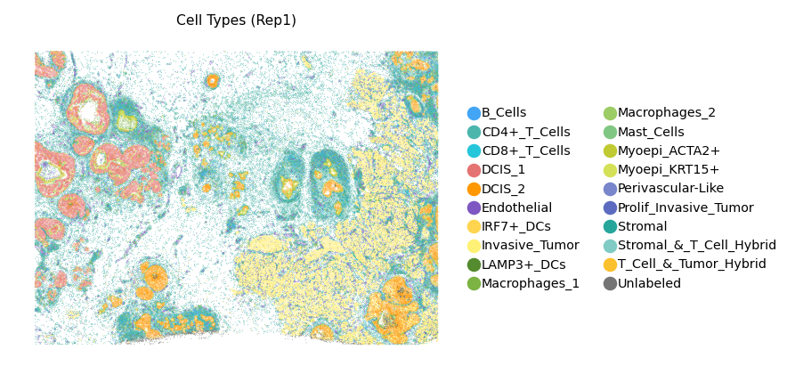
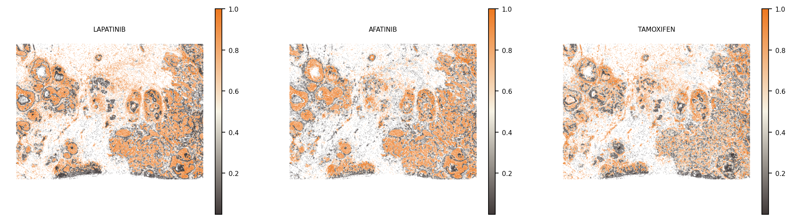
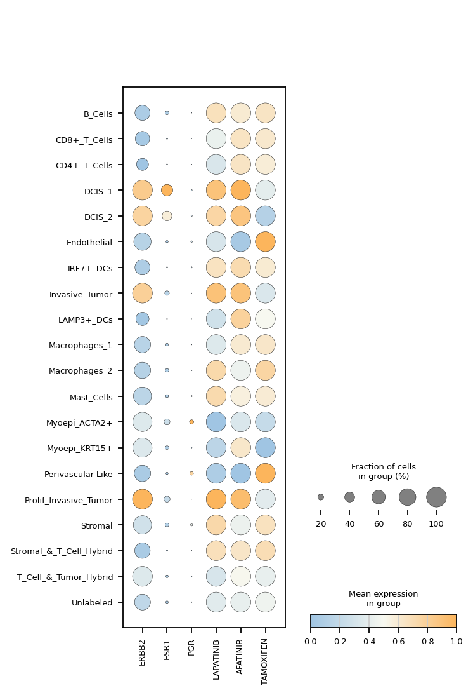
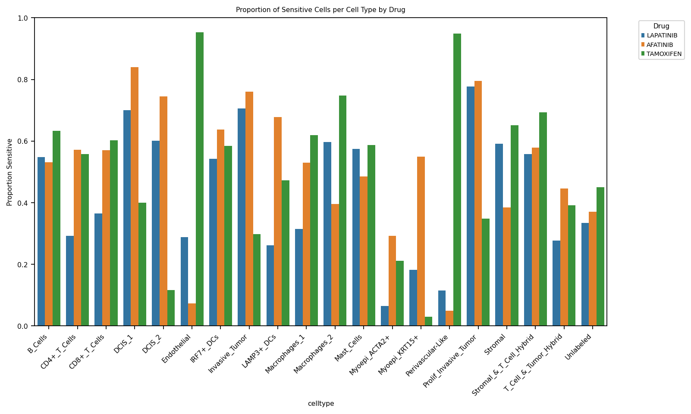
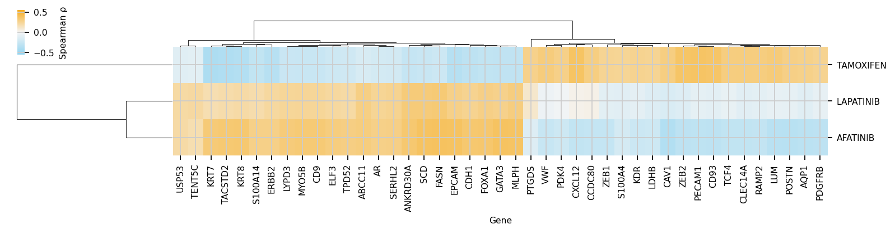
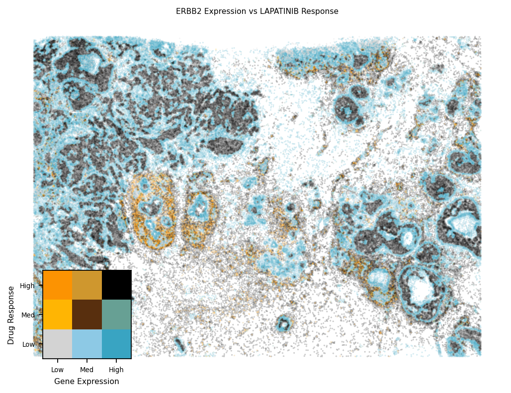
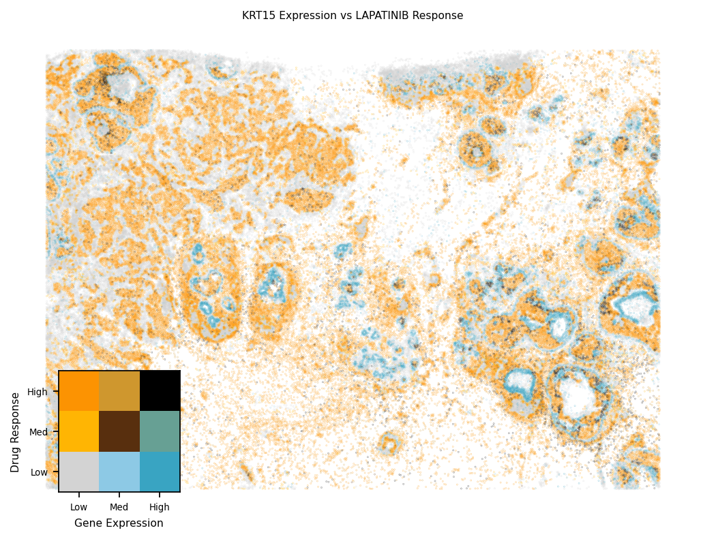
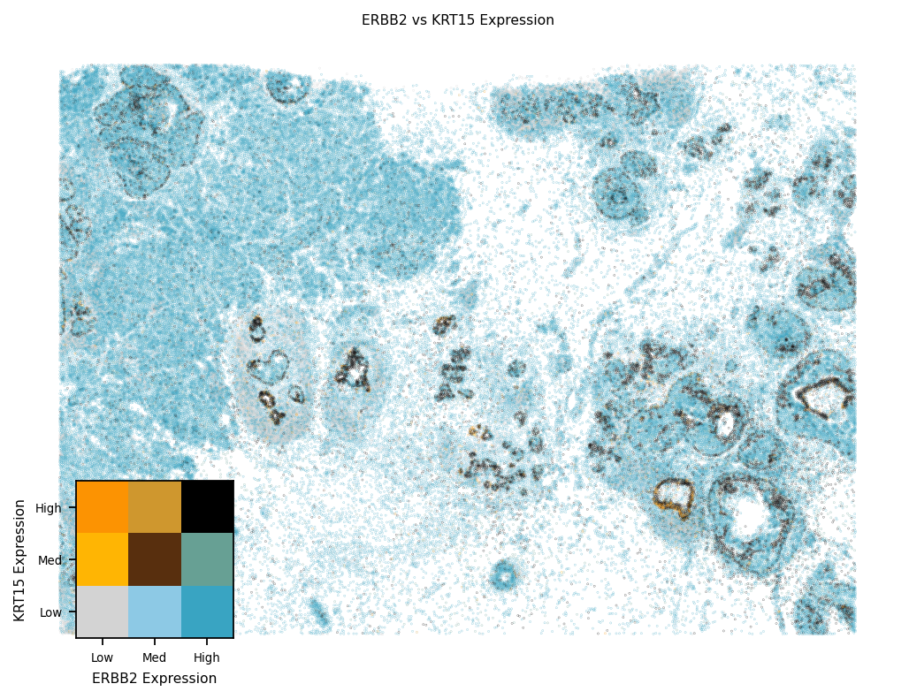

Tutorial 1 — Breast Cancer (Xenium Rep1)
Train PHAROST on bulk RNA-Seq labels + 10x Xenium spatial transcriptomics for three drugs, then run downstream analyses on the predicted cell-resolved drug-response scores.
import os
import sys
import pandas as pd
import torch
from tqdm import tqdm
sys.path.insert(0, '.')
import pharost
---------------------------------------------------------------------------
ModuleNotFoundError Traceback (most recent call last)
Cell In[1], line 4
2 import sys
3 import pandas as pd
----> 4 import torch
5 from tqdm import tqdm
7 sys.path.insert(0, '.')
ModuleNotFoundError: No module named 'torch'
Model Training
Train one PHAROST model per drug. Bulk RNA-Seq is the source domain (with known sensitive/resistant labels), spatial transcriptomics is the target domain. Domain alignment is enforced by LMMD + CORAL losses on the latent representations.
Configuration
Hyperparameters and input file locations. The bulk drug-response label CSV
(ALL_label_harmonized.csv) provides the per-cell-line sensitivity labels;
per-drug subsets are written to Selected_drug/{drug}.csv on first use.
n_epochs = 50
batch_size = 60
selected_drugs = ['LAPATINIB', 'AFATINIB', 'TAMOXIFEN']
file_dir = 'data/Xenium_BreastCancer_Processed'
result_dir = 'BC_result'
response_dir = f'{file_dir}/Selected_drug'
os.makedirs(response_dir, exist_ok=True)
drug_response = pd.read_csv('data/Preprocessed_Bulk_All/ALL_label_harmonized.csv', index_col=0)
Train per drug
For each drug we (i) cache its label column, then (ii) call pharost.train
end-to-end. Each run writes the trained model, predicted probabilities, and
a full training log to BC_result/{drug}/.
for drug in tqdm(selected_drugs, desc="Processing drugs"):
torch.cuda.empty_cache()
response_filename = f'{response_dir}/{drug}.csv'
if not os.path.exists(response_filename):
drug_response[[drug]].to_csv(response_filename)
pharost.train(
p_bulk_gene_exp=f'{file_dir}/bulk_exp_processed.csv',
p_bulk_label=response_filename,
p_adata=f'{file_dir}/breast_rep1_preprocessed.h5ad',
out_dir=f'{result_dir}/{drug}',
n_epochs=n_epochs,
batch_size=batch_size,
)
Processing drugs: 100%|██████████| 3/3 [11:01<00:00, 220.67s/it]
Downstream Analysis
Load predictions back into adata.obs and explore cell-type-resolved
drug-response patterns: spatial maps, per-celltype proportions,
gene-correlations, and bivariate spatial coexpression plots.
Plotting setup
Editable PDF text (fonttype=42) and global scanpy figure params.
import scanpy as sc
import numpy as np
import matplotlib.pyplot as plt
import matplotlib as mpl
from matplotlib.colors import LinearSegmentedColormap
mpl.rcParams['pdf.fonttype'] = 42
mpl.rcParams['ps.fonttype'] = 42
sc.set_figure_params(dpi_save=300, frameon=False, fontsize=7, format='eps', transparent=True)
Cell-type spatial map
Load the spatial AnnData and color each cell by its annotated cell type.
celltype_palette = {
'B_Cells': '#42A5F5',
'CD8+_T_Cells': '#26C6DA',
'CD4+_T_Cells': '#4DB6AC',
'DCIS_1': '#E57373',
'DCIS_2': '#FF9800',
'Endothelial': '#7E57C2',
'IRF7+_DCs': '#FFD54F',
'Invasive_Tumor': '#FFF176',
'LAMP3+_DCs': '#558B2F',
'Macrophages_1': '#7CB342',
'Macrophages_2': '#9CCC65',
'Mast_Cells': '#81C784',
'Myoepi_ACTA2+': '#C0CA33',
'Myoepi_KRT15+': '#D4E157',
'Perivascular-Like': '#7986CB',
'Prolif_Invasive_Tumor': '#5C6BC0',
'Stromal': '#26A69A',
'Stromal_&_T_Cell_Hybrid': '#80CBC4',
'T_Cell_&_Tumor_Hybrid': '#FBC02D',
'Unlabeled': '#757575',
}
adata = sc.read_h5ad(f'{file_dir}/breast_rep1_preprocessed.h5ad')
adata.obs['celltype'] = adata.obs['celltype'].astype('category')
sc.pl.spatial(
adata,
color='celltype',
spot_size=13,
palette=[celltype_palette[c] for c in adata.obs['celltype'].cat.categories],
title='Cell Types (Rep1)',
legend_loc='right margin',
show=False,
)
fig = plt.gcf()
for ax in fig.axes:
ax.invert_xaxis()
ax.invert_yaxis()
plt.show()

Drug-response spatial maps
pharost.analysis.load_response_prediction populates adata.obs[{drug}]
from each drug’s predicted_probabilities.csv. The spatial plot then shows
the probability distribution across the tissue.
adata = pharost.analysis.load_response_prediction(
adata,
drugs=selected_drugs,
path_template=lambda d: f'{result_dir}/{d}/predicted_probabilities.csv',
)
drug_cmap = LinearSegmentedColormap.from_list(
'pink_yellow_teal', ['#403939', '#f7f3e5', '#EE781F'], N=256,
)
sc.pl.spatial(
adata, color=selected_drugs, spot_size=13,
cmap=drug_cmap, vmax=1, show=False,
)
fig = plt.gcf()
for ax in fig.axes:
if not str(ax.get_label()).startswith('<colorbar>'):
ax.invert_xaxis()
ax.invert_yaxis()
os.makedirs('figures_BC', exist_ok=True)
plt.savefig('figures_BC/01_Spatial_drug_response.png', bbox_inches='tight', dpi=500)
plt.show()

Marker-gene + drug-response dotplot
Compare canonical breast-cancer markers (ERBB2, ESR1, PGR) against predicted drug responses in one dotplot, grouped by cell type.
var_names = ['ERBB2', 'ESR1', 'PGR'] + selected_drugs
dot_cmap = LinearSegmentedColormap.from_list(
"blue_white_orange", ["#A0C5E3", "#F7F8F0", "#FCB55C"]
)
sc.pl.dotplot(
adata,
var_names=var_names,
groupby='celltype',
categories_order=list(celltype_palette.keys()),
standard_scale='var',
cmap=dot_cmap,
show=False,
)
plt.savefig('figures_BC/01_Drug_gene_dotplot_summary.png', bbox_inches='tight', dpi=300)
plt.show()

Sensitive-cell proportion per cell type
For each drug, plot the fraction of cells with predicted probability > 0.5 within each cell type. Highlights which populations the model considers sensitive.
pharost.analysis.plot_response_celltype_prop(
adata,
target_drugs=selected_drugs,
cell_type_col='celltype',
save=True,
file_format='pdf',
save_dir='figures_BC',
)
Figure saved to figures_BC/response_celltype_prop.pdf

Drug × gene Spearman correlation
Spearman correlation between every gene’s expression and each drug’s predicted score. The union of per-drug top genes is rendered as a clustered heatmap with diverging colors centered on zero.
corr_df = pharost.analysis.drug_gene_correlation(
adata,
target_drugs=selected_drugs,
n_top_genes=20,
save=True,
save_dir='figures_BC',
file_format='pdf',
)

Bivariate spatial coexpression: gene × drug
Each cell is colored by its joint bin in (gene expression, drug response). The 3×3 legend grid shows the bivariate color encoding — darkest corner = high in both axes.
pharost.analysis.bivariate_gene_drug(
adata, gene='ERBB2', drug='LAPATINIB',
save=True, file_format='pdf', save_dir='figures_BC',
)
pharost.analysis.bivariate_gene_drug(
adata, gene='KRT15', drug='LAPATINIB',
save=True, file_format='pdf', save_dir='figures_BC',
)


Bivariate spatial coexpression: gene × gene
Same visualization scheme applied to two genes (ERBB2 vs KRT15). Useful for identifying cell populations that co-express two markers of interest.
pharost.analysis.bivariate_gene_gene(
adata, gene1='ERBB2', gene2='KRT15',
save=True, file_format='pdf', save_dir='figures_noCDAN',
)
